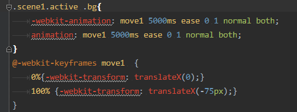
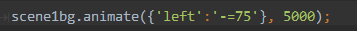
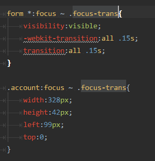
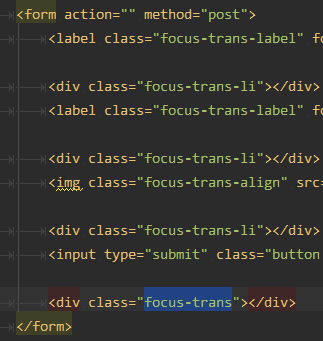
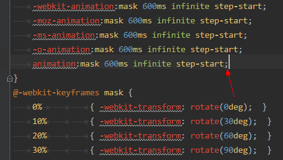
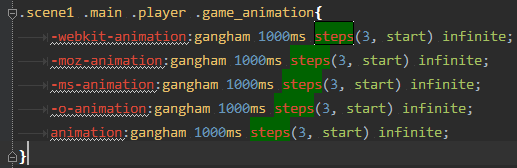
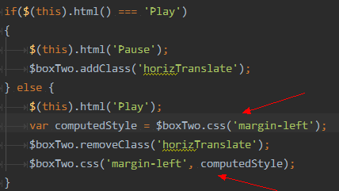
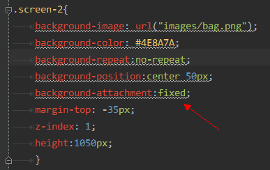
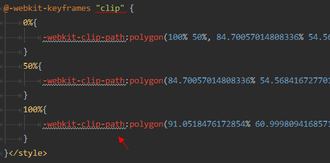
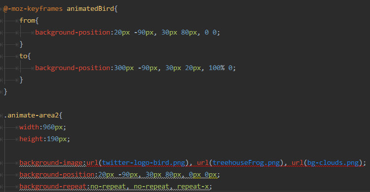

Super Liu
（按空格、上、下、左、右键跳转，按R键显示DEMO）
superliu(刘小超)
SNG社交网络事业群\128社交用户体验设计部\成都设计中心
2006年 - 中国票务在线
2007年 - 腾讯
2007年 - 音乐盒,音乐miniPortal,活动……
2008年 - 音乐盒,音乐miniPortal,活动……
2009年 - QzonePortal,音乐盒,活动……
2010年 - Qzone商城,黄钻活动,开放平台……
2011年 - Qzone商城,开放平台,LBS……
2012年 – 朋友网,空间营收……
2012年 – 空间营收……
如果希望创建流畅的体验和交互，页面渲染应该在每秒60帧以上（即60FPS以上），根据FPS的定义：1000 ms / 60 Hz = 16.6 ms。记住这一指标：每一帧的渲染时间应该保持在16ms以下。
CSS3
jQuery

transform: translateZ(0);
transform: translate3d(0, 0, 0); /* webkit */
内核统计
webkit统计
贝塞尔曲线 工具
Transition 工具
定位 + Transition (~ 同级选择器)
 Animation 属性顺序
animation: move2 3000ms ease 0 1 normal both;
animation-timing-function:step-start; (马上转跳到动画结束状态)
animation-timing-function:steps(3, start); (逐帧动画)
Transitions动画，使用变量保存停止时的样式

animationStart 开始(一次)
animationIteration 迭代(多次)
animationEnd 结束(一次)
transitionEnd 结束(一次)
element.style.webkitAnimationPlayState = "paused";
element.style.webkitAnimationPlayState = "running";
背景不随屏幕滚动 background-attachment:fixed;
-webkit-clip-path:polygon() 多边形切割
background 支持多背景图片
animate.css
CSS3 Animation Cheat Sheet
Performant CSS transitions & animations
liffect effect for lists
Use a spacebar or arrow keys to navigate